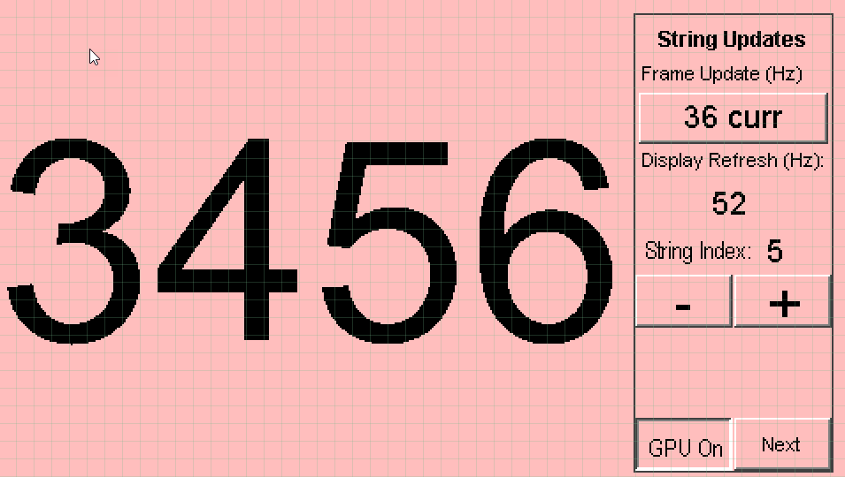
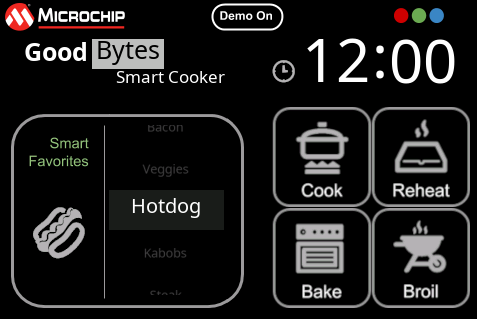
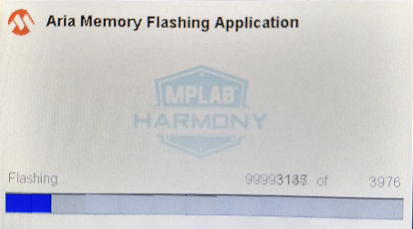
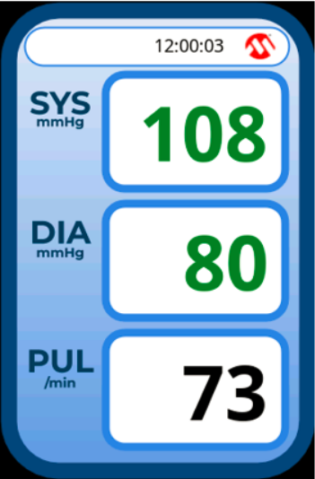
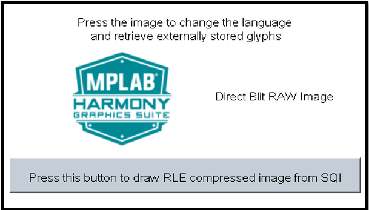
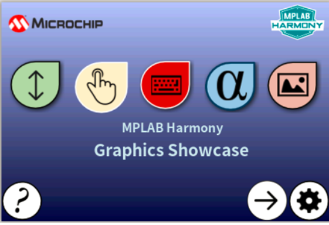

|
MPLAB® Harmony Graphics Suite
|
|
MPLAB® Harmony Graphics Suite
|
Legato Applications consist of examples and demonstrations which use the Legato graphics library.
Adventure - This application showcases how parallax and sprite animation can be achieved using the aria graphics library.

Benchmark - This application shows the frame update rates for various operations in the graphics library, including string rendering, area fills, and image decode and rendering.

ClimateControl - This demonstration provides a touch-enabled starting point for the legato graphics library.

Cooker - This demonstration provides a touch-enabled starting point for the legato graphics library.

Dashboard - This application presents a vehicle dashboard screen that has a gauge to show the engine RPM (tachometer), dynamic text to show speed and distance traveled and images for indicator like turn signals, etc.

Quickstart Flash - The legato_flash demonstration application serves as an external memory programmer to flash the off-chip non-volatile memory. .

Monitor - This demonstration provides a touch-enabled starting point for the legato graphics library.

Quickstart - This demonstration provides a touch-enabled starting point for the legato graphics library.

Quickstart External Resource - This demonstration provides a touch-enabled starting point for reading images, string, and multiple fonts from both internal and external non-volatile memory (NVM).

Showcase - This demonstration provides a touch-enabled starting point for reading images, string, and multiple fonts from both internal and external non-volatile memory (NVM).

 1.8.18
1.8.18